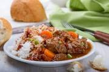

Rice With Stew

Description
We are going to prepare meat stew to be served with rice.
Have utensils ready,cooking dish,knives,cooking spoons and the cooker ready.
Ingredients
- Cooking fat
- Salt
- Royco spice
- boiled water
- Rice
- Dania leaves
- Tomato paste
- Onions
- Carrots
- Meat pieces
- Chilli sauce
Steps
- Fry Onions in cooking fat till it turns brown and add water into the cooking dish.
- Boil water and add Salt.
- Add rice in the boiled water,cover the dish and boil it with low heat for 15 minutes.
- Remove the rice and boil the meat pieces on another cooking dish.
- Boil till the water steams out.
- Add onions and cooking fat into the meat and fry them till brown.
- Add tomato paste and cook for 3 minutes then add carrots.
- Cook the food and add Royco spices and salt.
- Cook for 3 minutes and add dania leaves and cook for a while.
- Add water just below meat level in the cooking dish and boil it.
- Put some chilli sauce and cover the food.
- Switch off the heater.
- Food is ready